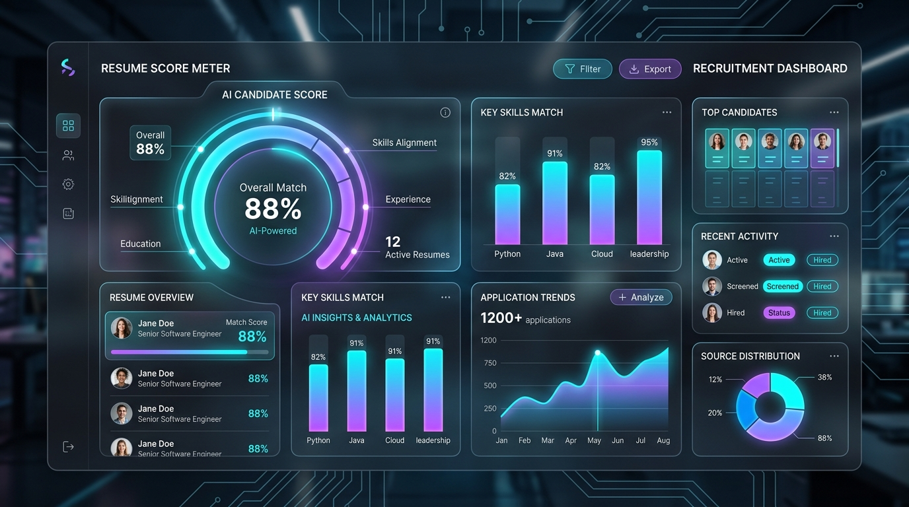

Optimize Your Resume for Your
Dream Job Role
Upload your PDF or DOCX resume, extract technical and soft skills with NLP, compute match percentages, and receive detailed score breakdowns, learning roadmaps, and career recommendations.

End-to-End ATS Analysis Pipeline
Click on any pipeline node below to inspect real-time processing telemetry, extraction algorithms, and scoring weights.
Multi-Format Resume Ingestion
Parses PDF and DOCX binary streams using PyPDF2 & docx2txt, sanitizing raw text and preserving structural section boundaries.
Categorized Skill Topology Matrix
Our NLP engine groups and scores candidate skills across high-impact industry domain clusters.
Three-Step Analysis & Guidance
A structured end-to-end workflow providing comprehensive score metrics, learning advice, and recommendations.
1. Select Target Role
Choose from curated industry roles like Python Developer, Data Analyst, Cloud Engineer, Cybersecurity Analyst, and MLOps Engineer.
2. Upload & NLP Parse
Upload your PDF or DOCX file. The system extracts text, maps technical & soft skills, and evaluates your experience profile.
3. Comprehensive Insights
Explore structured reports for Resume Score & Skills, Missing Skill Gap Learning Suggestions, and Career Recommendations.
Trending Target Roles
Pre-configured industry skill benchmarks ready for immediate comparison.
Cybersecurity Analyst
SIEM, Network Security, Ethical Hacking, Incident Response, Firewalls, Wireshark, Linux.
Select Role & Compare →MLOps Engineer
Python, Docker, Kubernetes, MLflow, CI/CD, AWS, Model Deployment, Monitoring.
Select Role & Compare →Cloud Security Engineer
AWS, Azure, IAM, Cloud Security, Terraform, Compliance, Encryption, Kubernetes.
Select Role & Compare →